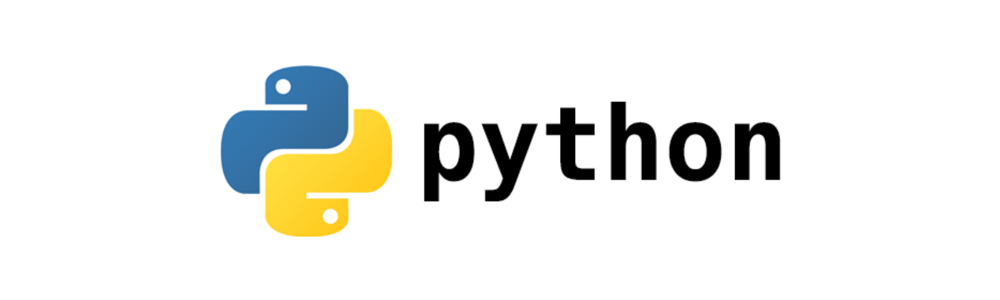
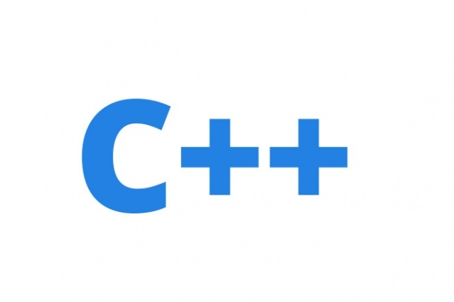
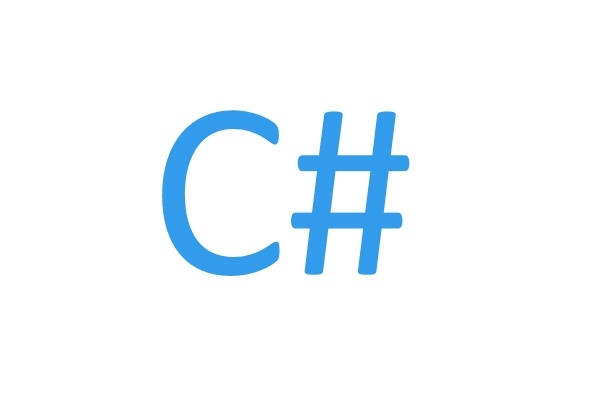
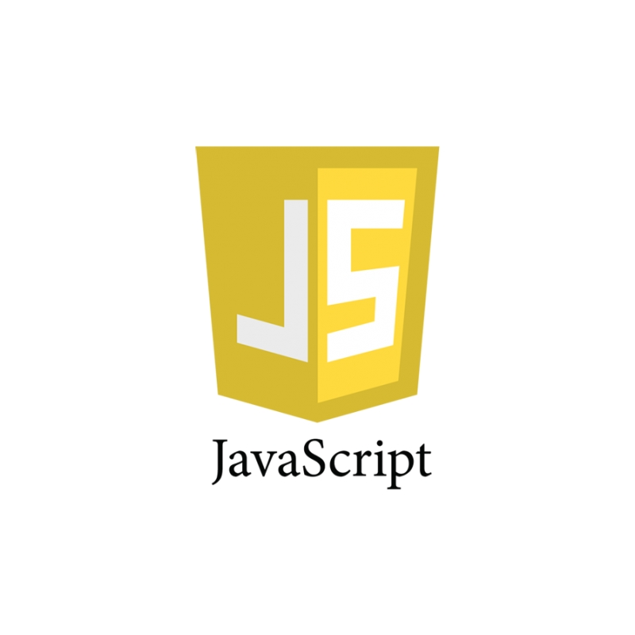

|
|
|
Выберите язык программирования
|

Python — высокоуровневый язык программирования, ориентированный на повышение производительности разработчика и читаемости кода. Python - это язык программирования, который позволяет работать быстро и осуществлять интеграцию систем более эффективно. |

C++ — компилируемый, статически типизированный язык программирования общего назначения.Поддерживает такие парадигмы программирования, как процедурное программирование, объектно-ориентированное программирование, обобщённое программирование. |
|

C# относится к семье языков с C-подобным синтаксисом, из них его синтаксис наиболее близок к C++ и Java. Язык имеет статическую типизацию, поддерживает полиморфизм, перегрузку операторов (в том числе операторов явного и неявного приведения типа), делегаты, атрибуты, события, свойства, обобщённые типы и методы, итераторы, анонимные функции с поддержкой замыканий. |

JavaScript — мультипарадигменный язык программирования. Поддерживает объектно-ориентированный, императивный и функциональный стили.JavaScript обычно используется как встраиваемый язык для программного доступа к объектам приложений. Наиболее широкое применение находит в браузерах как язык сценариев для придания интерактивности веб-страницам. |